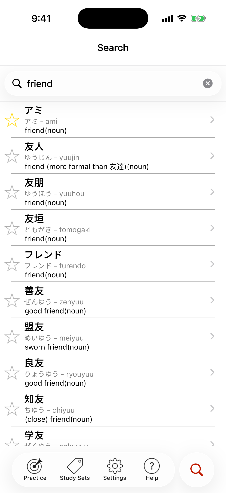

Word Search
You can search the 200,000+ word Japanese in a Flash! dictionary in under 1 second using English, Romaji, Hiragana, or Japanese kanji.

See the star on the left? Tap it once to add searched words to the My Starred Words study set immediately!
Search works best if you look for whole words and use the plain form of verbs. You can also search multiple terms at once in either language.
Try using a ? character at the end of a word - if you search for japan?, Search will return results like Japan, Japanese, Japanofile, Japanasaurus Rex, etc...